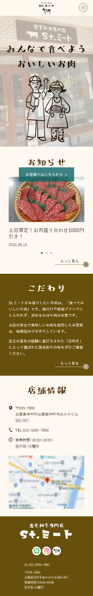
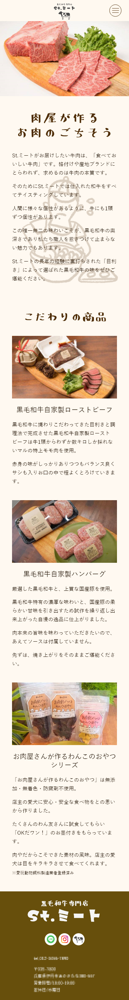
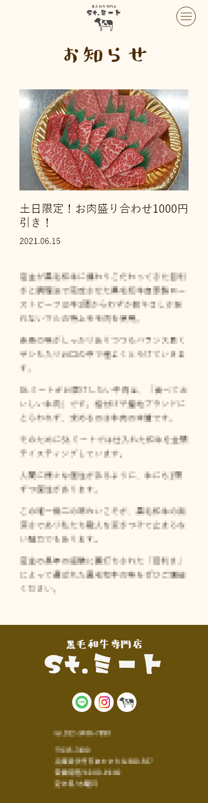
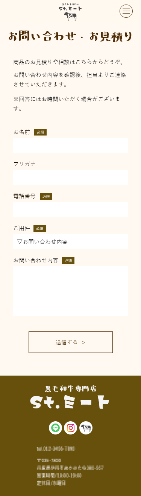
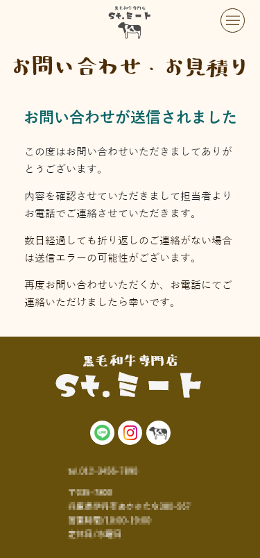

WORKS
St.ミート

制作時期：大学3年後期・1か月半
担当範囲：デザイン、コーディング
仕様ツール：Illustrator、Photoshop、XD、Brackets、Word
実際にある精肉店のWebサイトを制作しました。デザインを考えるため精肉店のサイトを研究した所多くのサイトが黒や赤、金など高級感のあるカラーのデザインを使用していました。しかし、店主の奥さんがカフェを経営することに憧れており、店自体も明るい雰囲気であるためほかのサイトとは違ったデザインにしようと考えました。そこで精肉店のサイトだけではなく、様々なカフェのサイトのデザインの研究や店主の奥さんへの取材を行いました。その結果、他の精肉店とは違った、明るい雰囲気のサイトをデザインすることができました。





